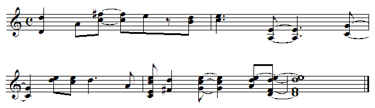
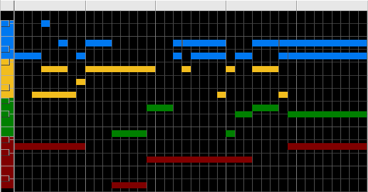

| To demonstrate how entirely separate duration and pitch scaling are, listen to this example. |
|  |
| It contains exactly the same number of notes as Example 1 along with an identical pitch distribution by bin, yet it sounds entirely different. Here is the color-coded bin map |
|  |
Return to Background.
© 2004 Harlan Brothers